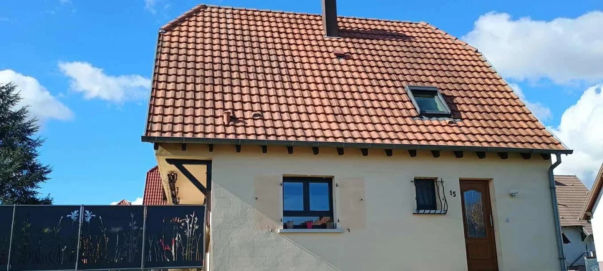
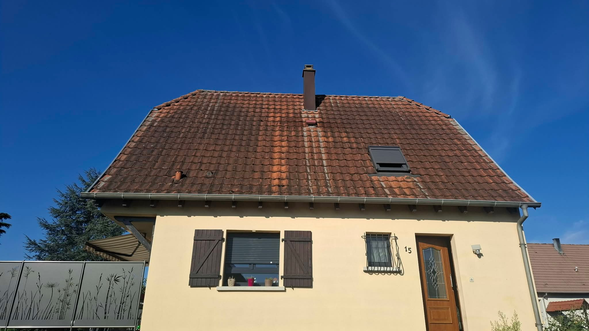
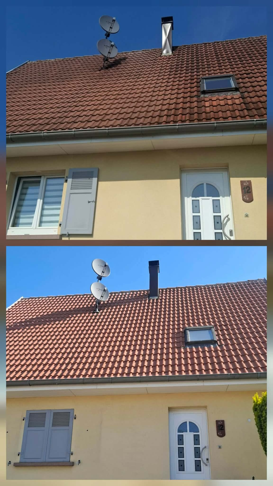
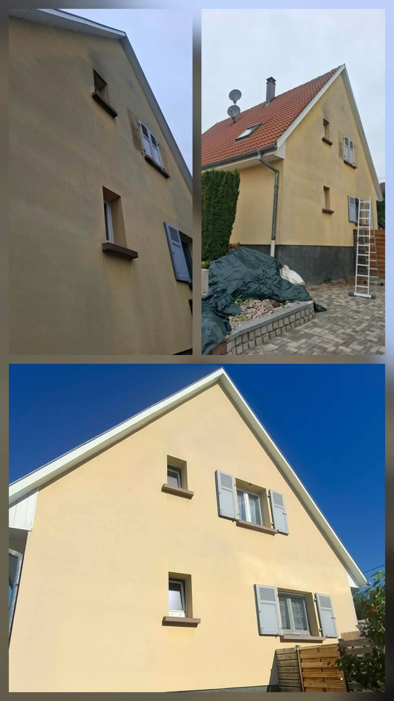

Toiture envahie de mousses
Mousses et lichens retiennent l'humidité, fissurent les tuiles et raccourcissent la vie de votre couverture.

Nettoyage & traitement durable · Alsace
PulveryClean Alsace nettoie et protège toitures, façades, terrasses et panneaux solaires. Un résultat impeccable, sans chlore ni javel, signé par deux artisans alsaciens notés 5/5 sur Google.
02 - Le constat
Mousses, algues et pollution ne sont pas qu'une question d'esthétique. Laissés sans traitement, ils abîment durablement vos surfaces, et la rénovation coûte bien plus cher que l'entretien.
Mousses et lichens retiennent l'humidité, fissurent les tuiles et raccourcissent la vie de votre couverture.
Traces noires et algues vertes donnent à votre maison un air négligé et font chuter sa valeur perçue.
Dalles encrassées, vert d'eau et surfaces glissantes gâchent vos extérieurs dès le retour des beaux jours.
Karcher trop puissant et javel abîment vos surfaces, polluent vos plantations… et la saleté revient vite.
« Bien entretenir une maison coûte beaucoup moins cher que de la rénover, et c'est meilleur pour la planète. » C'est sur cette conviction qu'est née PulveryClean Alsace.
03 - La réponse PulveryClean
Une méthode par pulvérisation maîtrisée et des produits sans chlore ni javel. On élimine la cause, pas seulement la trace, pour protéger durablement chaque surface de votre maison.
Démoussage complet, traitement anti-mousse et hydrofuge de protection. Mousses, lichens et noircissures éliminés pour une couverture saine et durable.
En savoir plusAlgues vertes, traces noires et pollution supprimées sans agresser l'enduit. Votre façade retrouve sa teinte d'origine et reste protégée.
En savoir plusDalles, pavés, bois ou béton : un nettoyage en profondeur, sans chlore ni javel, qui redonne vie à vos extérieurs sans abîmer les surfaces.
En savoir plusDes panneaux propres produisent davantage. Nettoyage doux et sans rayure pour restaurer le rendement de votre installation photovoltaïque.
En savoir plus04 - Les transformations
Des photos réelles, prises sur nos chantiers en Alsace. La meilleure preuve de notre savoir-faire reste la différence avant / après.


Glissez pour comparer Toiture démoussée & traitée, maison individuelle en Alsace



05 - Comment ça se passe
Du premier appel à la fin du chantier, vous savez exactement ce qui est prévu et ce que vous payez.
Décrivez-nous votre projet par téléphone ou via le formulaire. Nous cernons rapidement vos besoins.
Nous mesurons les surfaces et vous remettons un devis gratuit et détaillé, à partir de 5 €/m², sous 48 h.
Abords protégés, matériel adapté, produits sans chlore ni javel. Un travail propre, du début à la fin.
Vous profitez d'une surface nette et protégée. Un traitement préventif prolonge l'effet dans le temps.
06 - Avis clients
Une entreprise comme il en existe que trop peu. Un service au top, avec le sourire du devis jusqu'aux travaux. Une équipe très sympathique.
il y a 2 mois
J'ai fait appel à PulveryClean pour le nettoyage de ma terrasse et les murs de ma dépendance. Très satisfaite du résultat, de leur réactivité et de leur professionnalisme. Je recommande.
il y a 4 mois
Nous avons fait appel à Thomas et Jérémy pour notre toiture, très noircie par les intempéries. Ils ont protégé terrasse, piscine et jardin. Un travail soigné.
il y a 4 mois
Merci à PulveryClean Alsace. Mon restaurant a fait peau neuve. Ils sont intervenus rapidement pour nettoyer la terrasse. Le résultat est propre.
il y a 4 mois
Excellent professionnel. Tous les objectifs sont atteints, nettoyage de façade, toiture et murs. Résultat magnifique. Je conseille fortement cette enseigne.
il y a 4 mois
Travail sérieux et soigné, équipe professionnelle et efficace. Résultat conforme aux attentes. Je recommande PulveryClean Alsace.
il y a 4 mois
Très contente du résultat final sur le traitement de ma façade. Entreprise sérieuse et professionnelle.
il y a 4 mois
Très satisfaite du nettoyage de ma façade. L'équipe est intervenue rapidement, avec beaucoup de sérieux et de professionnalisme.
il y a 2 mois
Un travail de qualité et bien soigné, on apprécie vraiment.
il y a 4 mois
Travail très professionnel, résultat impeccable. Équipe sérieuse et efficace. Je recommande sans hésiter.
il y a 2 mois

07 - Qui sommes-nous
PulveryClean Alsace, c'est Thomas Jehl et Jérémy Birger. Thomas vous accompagne sur la relation client et les devis ; Jérémy pilote la partie technique sur le terrain. Une équipe à taille humaine, qui s'engage personnellement sur chaque chantier.
08 - Vos questions
Prix, méthode, garanties, délais : les réponses aux questions que se posent la plupart de nos clients avant de nous confier leur projet.
Nos prestations démarrent à 5 €/m². Le tarif final dépend de la surface, de l'état d'encrassement et du traitement choisi. Nous établissons toujours un devis gratuit, clair et détaillé, sans engagement.
Non. Nous adaptons la pression et la méthode à chaque support. Contrairement au nettoyage haute pression agressif, notre approche par pulvérisation préserve les tuiles, l'enduit et l'étanchéité de votre couverture.
Jamais. Nous travaillons exclusivement sans chlore ni javel. Nos produits préservent vos joints, vos plantations, le mobilier et la nappe phréatique, pour un résultat sain et durable.
Après le nettoyage, nous pouvons appliquer un traitement anti-mousse préventif ou un hydrofuge de protection qui ralentit fortement le retour des mousses et des salissures. Vous espacez ainsi les interventions sur plusieurs années.
Nous vous transmettons votre devis sous 48 h après votre demande. La date d'intervention est ensuite planifiée rapidement, en tenant compte de la météo pour garantir un résultat optimal.
Oui, systématiquement. Nous protégeons terrasse, piscine, mobilier et végétaux avant toute intervention, et nous laissons le chantier propre en partant.
Basés à Bindernheim, nous intervenons dans tout le Bas-Rhin et le Haut-Rhin : Strasbourg, Sélestat, Colmar, Ribeauvillé, Marckolsheim, Benfeld, Erstein, Obernai, Barr et leurs environs. En cas de doute sur votre commune, appelez-nous.
09 - Zone d'intervention
Basés à Bindernheim, nous intervenons dans le Bas-Rhin et le Haut-Rhin, de Strasbourg à Colmar en passant par Sélestat. Un doute sur votre commune ? Appelez-nous, nous nous déplaçons largement dans la région.
10 - Contact
Décrivez-nous votre projet en quelques mots. Nous vous rappelons rapidement pour évaluer la surface et vous proposer un tarif clair, sans engagement.
Prêt à commencer
Devis gratuit sous 48 h. Sans chlore ni javel, pour un résultat durable que vos voisins remarqueront.